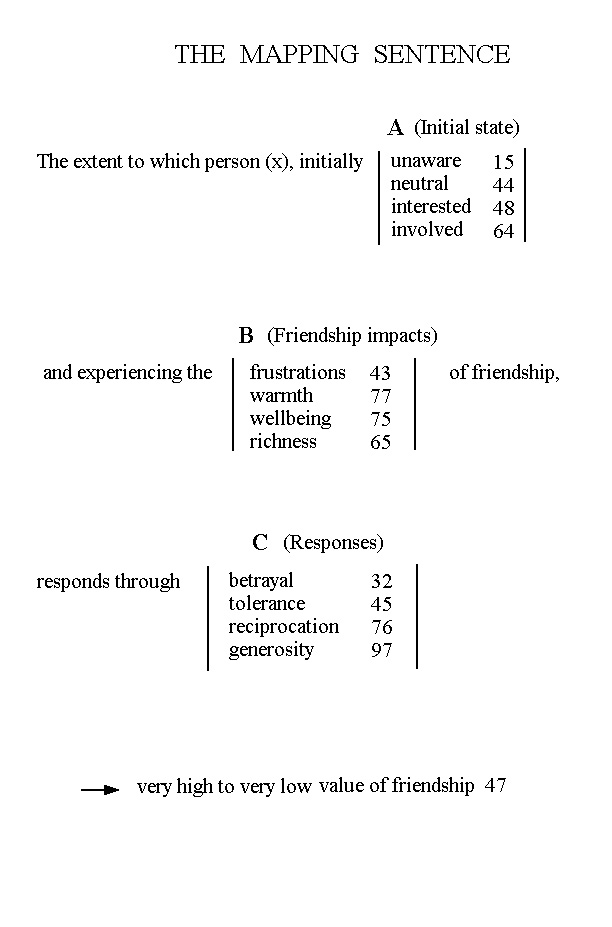
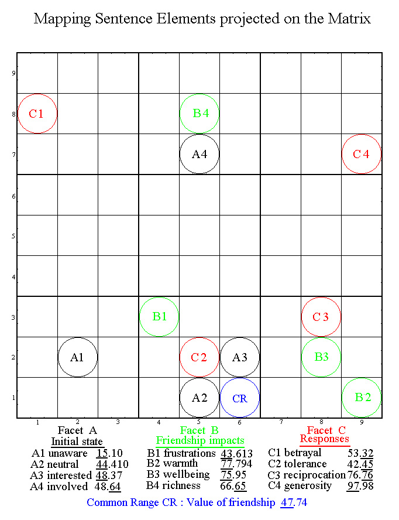
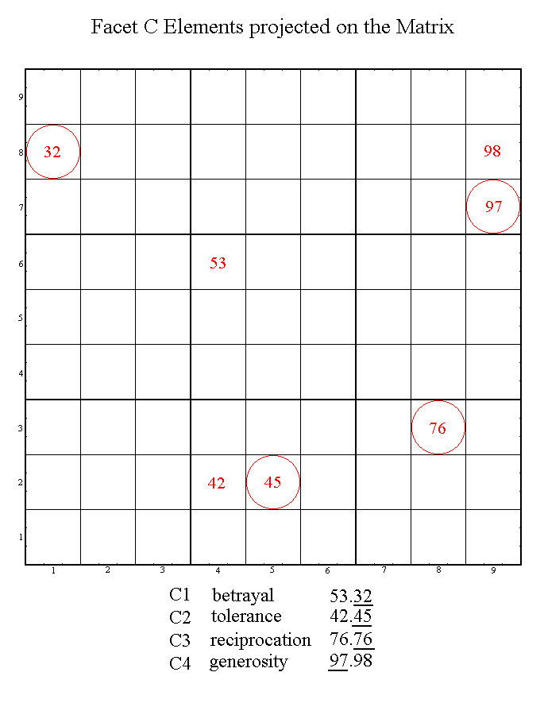

THE VALUE OF FRIENDSHIP
A Facet Approach with Holistic Support
Ben Bayer (Australia) and Gil Goldzweig (Israel)
Abstract. Following the investigative approach
taken in a previous paper (The Quality of Democracy), a similar approach
is taken to explore the trilogy of Friendship, Hatred and Love. This
paper starts with Friendship, but keeps in perspective the final holistic
objective of the trilogy.
The methodology recognizes the critical importance of
the Mapping Sentence working in partnership with an FT program. The
Common Range is chosen as the Value of Friendship and a Mapping Sentence
is developed with three Facets having four elements each. The intention
is to proceed in the usual manner to a questionnaire with the analysis
carried out by the FT program with its visual printout allowing outcome
interpretation. Current FTA debate on adequacy of samples to meet
acceptable criteria of representation and comparison, together with some
acknowledged time pressures, limits this paper to the Mapping Sentence,
with the further work to follow. Yet it allows and invites feedback
and debate. It also underscores a considered belief in the primacy
of the Mapping Sentence in its partnership with the program in the FT process.
1. INTRODUCTION
This paper follows the investigative approach taken in a previous paper, The Quality of Democracy, presented two years ago in Berne. It explores Friendship, the first of a Trilogy of social relationships, the other two being Hatred and Love. The political entity Democracy and the Trilogy three social entities are seen as having important interacting elements and the Facet approach is viewed as a powerful tool to investigate these relationships while the holistic support provided by the Matrix ensures additional meaningful visual validation for each phase of the FT process.
The phases of the FT process usually include a selection from the following:
A Mapping Sentence, a questionnaire to obtain data, data from existing
records, the data frame, the FT program, computed printouts, outcome interpretation,
results analysis, conclusions.
Each phase of the process is important and as a partner contributes
to the validity of the conclusions.
Dealing only with the Mapping Sentence does not fragment or invalidate the process as long as the holistic perspective is maintained. In fact it is suggested that among the various partnerships involved in the FT process, the Mapping Sentence rates as the prime partner.
2. THE MATRIX
It is proposed to include in this section some relevant information from previous papers which although readily available on the Internet will make this paper easier to read.
2.1 The holistic framework
The Matrix provides the conceptual framework within which all concepts
and entities are projected. It is a framework which integrates the
four elements feel/think/act/time into a single holistic landscape of values
and entities, allowing visualisation of conceptual notions and relationships
graphically and numerically. Of modular construct with decimal continuity,
it forms a universal framework accommodating conceptual totality and functional
flexibility.
A 4-page Matrix Statement giving details of the Matrix construction, its rationale and a number of associated corollaries is readily available. It can be downloaded from the Internet, Web site http://www.ozemail.com.au/~bayerben/
2.2 Matrix expressions
They are numerical codes allocated to concepts and entities, in accordance with perception, to achieve the best fit on the Matrix landscape.
The decimal point in the expression separates the “Radical” on its left which is the selected starting position, from the “Fractal” on its right which is the decimal emphasis representing the direction of change.
For example, leadership (59.86) and consensus (59.75) share the radical 59 (choice/optimisation) but differ in the decimal emphasis, 86 (design) and 75 (reason) respectively.
The determination of a Matrix expression relating to an entity gets its validation from tests of perception (25.45), equivalence (55.383/55.386) and coherence (49.55). For this reason, the Matrix expressions presented in this paper should be considered as a first draft, open to and inviting debate.
When two digits are underlined in a Matrix expression, it signifies emphasis on that Matrix location and would infer special selection in a particular Matrix display.
3. THE MAPPING SENTENCE
3.1 Facets are key components of the mapping sentence. By grouping a number of elemental words VERTICALLY between bracketing lines in the HORIZONTAL flow of the mapping sentence, facets help achieve a functional and compact form which allows a large number of permutations to be presented at a glance, simply and clearly.
Facets are also most valuable in formulating definitions because they allow complex meanings to be presented in a sequence of simple structures where the qualities of clarity and acceptability can be readily verified.
3.2 The Common Range is the heart of the mapping sentence. In order
to have a common range, a set of items have to be ordered from high to
low towards the same meaning.
The common range for the Democracy paper was “effective democracy”.
The common range for Friendship is “the value of friendship”.
3.3 The Mapping Sentence developed for the value of friendship yielded
three facets with four elements each. It is shown in its familiar format
under the heading “THE MAPPING SENTENCE”.
The two-digit numbers alongside the facet elements and the common range
refer to Matrix locations.
3.4 Two Visual Displays are shown under the headings:
“Mapping Sentence Elements projected on the Matrix”
and “Facet C Elements projected on the Matrix”



The numbers alongside the facet elements represent their Matrix expressions. Two-digit numbers underlined in these Matrix expressions signify emphasis on that location and hence special selection in the respective Matrix display.
4. DISCUSSION
Discussions and debates are widely recognized as most effective ways of refining proposals and enhancing their quality. The key note in this short paper is the holistic notion that a balanced sense of perspective should never be lost. Excess (32) is avoided and access (64) is promoted.
Small issues such as sample size in relation to surveys could be expected to differ according to context and goal, as requirements for preliminary innovative pilot studies would not be similar to in depth national investigations. Major issues such as approach to problems and methodology for solutions can only gain from exposure to as wide an audience as possible and modern high technology communication means such as e-mail and the Internet are facilitating and accelerating the move towards constructive and optimal solutions.
5. CONCLUSION
The Mapping Sentence is projected as the prime mover of Facet Theory. The simplicity of its format and the rich linkages of its elemental key words give it unlimited potential for effectively exploring relationships in all fields of human endeavour.
The integration between FT and the holistic approach of the Matrix has moved one step further. Meanings and correlations are merging closer. However a broad comprehensive program has been spelt out. Its completion is seen as practical in the near future and may well be made faster by interactive contributions within the FTA fraternity.
6. REFERENCES
Guttman R. and Greenbaum C. W. (1998). Facet Theory: Its development and Current Status, European Psychologist, Vol 3 (1), pp. 13-36.
Hawking S. (1989). A brief history of time.
Levy S. and Guttman L. (1974). Values and attitudes of Israeli high school youth, First research project. Jerusalem, The Israeli institute of applied social research (Hebrew with English translation of introduction and summary).
Levy S. and Amar R. (1997). The use of Multidimensional Posac (MPOSAC), proceedings of the Sixth International FT Conference pp.22-31.
Shye S. (1989). Systemic Life Quality Model: A basis for urban renewal evaluation. Social Indicators Research, 21, pp. 343-378.
Shye S., Elizur D. [with Hoffman M.] (1994). Introduction to Facet Theory. Applied Social Research Methods Series, 35, Sage Publications.